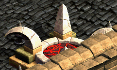

メインクエスト Season1 Chapter4


| Part3 手掛りを探せ | |
|---|---|
| 1. 手がかりを探して | |
RED STONEに関連する、より詳しい情報を手に入れるために、ゲールに会ってみよう。 ゲールから伝言が来た。忘れられた廃坑Eへ行き、ボーンキメラを退治して、ボーンキメラの角を10個手に入れよう。 すべての材料をそろえた。この後は、RED STONEについてもっと詳しい情報を入手するためにゲールに会ってみよう。 ゲールに会ったが、必要な情報はそんなに聞けなかった。ログハウスに行って仲間たちと、このことについて相談しよう。 |
|
| 受諾場所 | ログハウス ヴォルフラム |
| 受諾条件 | Lv235 |
| 報酬 | 経験値60万 |
| オールドパブ | 棚（12.5）をクリック |
| 忘れられた廃坑 Ｅ | ボーンキメラ（Lv195）Zinを10匹倒す 火/大地/闇抵抗114％、ワームバイト攻撃、HP回復650程あり。1/4回目 |
| オールドパブ | 棚（12.5）をクリック、ゲールの家へワープ |
| ゲールの家 | ゲール（11.10）へ 本棚（3.6）をクリックすると外へワープ  |
| ログハウス | フローレンスへ |
| 2. 新しい情報を探せ | |
ゴドム共和国議員であるブロームに会ってみよう。しかし、その前にレベル237まで上げよう。 古都ブルンネンシュティグにあるブルン王国の古き王宮跡地の地下から、RED STONEに関する本を手に入れよう。手に入れなければならない本は3冊である。本を手に入れるためには本を管理する図書館の鍵番から鍵を奪わなければならない。 RED STONEの正体と関連がありそうな本は全て手に入れた。ログハウスの仲間たちのもとに戻ろう。 |
|
| 受諾場所 | ログハウス フローレンス |
| 受諾条件 | Lv235 |
| 報酬 | 経験値80万 迷彩服8個 アイノの報告書をケブティスやメカジャに渡した場合 ゴドム共和国名誉議員Lv2（カリスマ +4） アイノの報告書をブロームに渡した場合 ゴドム共和国名誉議員Lv3（カリスマ +7） |
| 国会議員ブロームの事務室 | Lv237以上でブローム（13.13）へ 1-5-9での選択によって、ゴドム共和国名誉議員Lv2～3に上がる。 アイノの報告書をケブティスやメカジャに渡した場合、Lv1（+2）→Lv2（+4） アイノの報告書をブロームに渡した場合、 Lv2（+4）→Lv3（+7） |
| 古都ブルンネンシュティグ | 柵（6.9）をクリック、ブルン王国の秘密図書館へワープ 1-5と同じ場所  |
| ブルン王国の秘密図書館 | ミニマップ表示不可 ①図書館の鍵番（Lv240）Zinを倒す → 金鍵を入手 → ①本棚（4.3）をクリック ②図書館の鍵番（Lv240）Zinを倒す → 銀鍵を入手 → ②本棚（5.42）をクリック ③図書館の鍵番（Lv240）Zinを倒す → 銅鍵を入手 → ③本棚（92.4）をクリック  |
| ログハウス | ヴォルフラムへ |
| Part4 地下界の動き | |
|---|---|
| 1. 地下界の動きを封じよう | |
|
以前に戦った地下界の悪魔とは、また別の強力な悪魔軍団との戦闘だ。まずはレベルを240まで上げた後、戦闘に臨もう。情報によると彼らの集結地はナラダ平原の沼地帯 / ノーススワンプで、そこに隠れているという。そのため、必ず仲間たちと共にやり遂げなければならない。かなり、ひとくせある隊長が出撃したと言う。仲間たちにも迷彩服を配ることを忘れずに！ |
|
| 受諾場所 | ログハウス ヴォルフラム |
| 受諾条件 | Lv237 |
| 報酬 | 経験値350万 5万G |
| 地下軍団 集結地 | 秘密ダンジョン 凍りついた城 |
| 2. これからすべきこと | |
|
地下界の悪魔軍団を全て倒した。ログハウスに戻って、これからのことについて相談しよう。地下界軍団の集結地から脱出する方法は、ここにいるモンスター達だけが知っている。まずはモンスターを倒そう。 ラカリフサでRED STONEに関するナゾナゾを出しているソオラと言う少女を尋ねてみよう。 ソオラから鍵をもらった。アイノ・ガスピル会長の所に行こう。 地下水路B4の隠された部屋にある金庫の中に何が入っているのか確認した後、それをアイノ・ガスピル会長のもとに持って行こう。 モンスターたちが大勢出てきた。全て倒した後、アイノ・ガスピル会長に、この場所で起きたことについて報告しよう。 金庫の中には何もなく、モンスターだけが出てきた。アイノ・ガスピル会長に、この事実を知らせよう。 |
|
| 受諾場所 | 地下軍団 集結地 |
| 受諾条件 | Lv240 |
| 報酬 | ① 経験値5万 + 経験値65万 ②③④ 経験値65万 |
| ログハウス | ヴォルフラムへ |
| 農村ラカリフサ | ソオラ（111.113）へ ①ロシペルですね。ロシペル。 → 経験値5万 ②タムイですね。タムイ。 → なし ③パチラギですね。パチラギ。 → なし ④ごめんなさい。誰のことかよく分からないです。 → なし |
| スウェブタワー ２０Ｆ | アイノ・ガスピル（86.84）へ |
| 地下水路 Ｂ４ | 本棚（50.8）をクリック、本棚の後ろにある隠し部屋へワープ |
| 本棚の後ろにある隠し部屋 | 宝箱（13.25）をクリック、コボックス（Lv240）が出現、倒す、 地下水路 Ｂ４へワープ |
| スウェブタワー ２０Ｆ | アイノ・ガスピルへ |
| 3. 会長の夢の意味 | |
アイノ・ガスピル会長の夢の内容がどうしても怪しい。夢の内容について、ログハウスにいる仲間たちに話してあげよう。 |
|
| 受諾場所 | スウェブタワー ２０Ｆ アイノ・ガスピル（86.84） |
| 受諾条件 | Lv240 |
| 報酬 | 経験値3万5000 |
| ログハウス | カルスへ |
| 4. 火の鳥の爪 | |
忘れられた廃坑Eへ行き、ボーンキメラを倒して、ボーンキメラの角を10個持って来よう。 必要な材料は全て手に入れた。アモレア頭領の所に行こう。 モリネルタワー5階にいる魔法師ライトレーに会いに行こう。 西プラトン街道 / アリアン東部地域に行こう。アリアン東部地域の北方地域をよく探してみると崩れた遺跡地を見つけることができる。この遺跡地にドラコリッチが隠れているような気がする。一人では行けないので仲間を集めて一緒に行こう。 ドラコリッチが逃げた。隠れそうな所は、己の納骨堂しかないはず！納骨堂でドラコリッチを退治して火の鳥の爪を手に入れよう。 追放天使に関するより詳しい情報を入手するため、やぶ森に住むエルフ将エリアスに会ってみよう。ここから脱出する方法は、ここにいるモンスターだけが知っている。モンスターを退治しよう。 |
|
| 受諾場所 | ログハウス カルス |
| 受諾条件 | Lv240 |
| 報酬 | 経験値60万 |
| 忘れられた廃坑 Ｅ | ボーンキメラ（Lv195）Zinを10匹倒す 火/大地/闇抵抗114％、ワームバイト攻撃、HP回復650程あり。2/4回目 |
| 地下水路 Ｂ２ | アモレア（47.13）へ |
| モリネルタワー 地上５階 | ガディウス大砂漠 /
モリネルタワー付近は見えないワープが多数あるので、ロード画面中から左クリックを押したまま進む。 モリネルタワーは開いている扉、モンスターのいない通路を進む。 ライトレー（44.69）へ 魔方陣（35.74）をクリックすると外へワープ  |
| ドラコリッチの遺跡 | 秘密ダンジョン 龍の墓 |
| やぶ森の中 | エルフ将エリアス（25.29）へ 行き方の詳細は ⇒ やぶ森の中 |
| Part6 明らかになる秘密 | |
|---|---|
| 1. 明らかになる秘密 | |
仲間たちはアンジーに会うため、出発しようとしている。こちらは、メデス頭領と会う前に、ガディウス大砂漠 / グレートフォレスト北部地域の遺跡地に行き、光の剣と光の盾を手に入れよう。特に砂漠を越えなければならないので、他の任務と比べられないほど大変な任務になるだろう。なお、一緒に行くパーティーの仲間を途中で失うと、再度パーティーの仲間を呼び戻すことがとても難しいので、強い仲間たちの助けをもらおう。もし、その場に再び戻って来れる鍵を手に入れたならば、一緒に行くパーティー仲間たちと1個ずつ分けて持とう。 必要な材料はすべて手に入れた。この次はメデス頭領に会いに行こう。ここから脱出する方法は、この場所にいるモンスター達が知っている。モンスター達を退治しよう。 ロマ村 ビスルにいるレッドアイの元老であるウニエル元老を訪ねよう。 仲間たちがいるログハウスに戻ろう。 |
|
| 受諾場所 | ログハウス カルス |
| 受諾条件 | Lv245 |
| 報酬 | 経験値250万 |
| ティアメスの道 | 秘密ダンジョン 果てしない砂漠 |
| 地下水路 Ｂ３ | メデス（49.38）へ |
| ロマ村 ビスル | ウニエル（61.63）へ |
| ログハウス | ファーブへ |
| Part8 ゲールと会長の会合 | |
|---|---|
| 1. ゲールと会長の会合 | |
ゲールとアイノ・ガスピル会長が会合する場所、ヘムクロス高原 / アラク湖付近の捨てられた望楼に行こう。 |
|
| 受諾場所 | ログハウス ヴォルフラム |
| 受諾条件 | Lv245 |
| 報酬 | 経験値50万 |
| ヘムクロス高原 / アラク湖付近 | 小屋（75.7）をクリック、捨てられた望楼へワープ |
| 捨てられた望楼 | アイノ・ガスピル（9.11）へ |

[参考] Yotsuba Quest DataBase